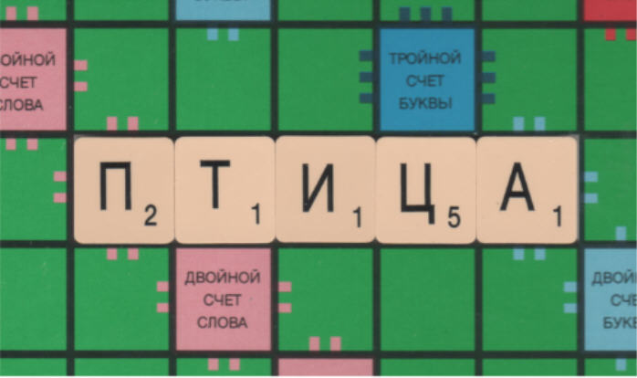
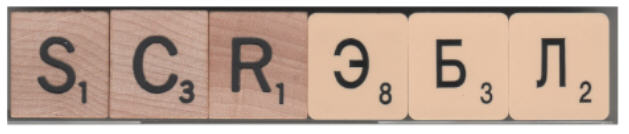

| Feature Article - March 2005 |
| by Do-While Jones |
If you have a Scrabble TM game, and lots of time on your hands, you can learn a lot about microevolution and macroevolution.
Science is best learned by experimentation, so let us describe some experiments you can do to learn important lessons about selection and evolution. We used a computer that simulates 1,000 trials in seven minutes; but even if you don't have a computer, you can verify the results by hand for fewer trials in a little more time with a standard Scrabble game.
A standard Scrabble game has 98 letter tiles (plus two blank "wild card" tiles, which we didn't use). The letters are not equally represented on the tiles. That is, there are nine A's and twelve E's, but only one Q and one X.
These letters represent genes. We refer to the collection of letters as the "letter pool" or "gene pool" interchangeably to reinforce the notion that the letters represent genes.
To do the experiment, select five letters at random from the gene pool, and see how many different words you can make with the five letters.
Since we didn't want my imperfect knowledge of the English language to bias the results, we used an impartial computer to find the words. There is a file called "ospd.txt" that anyone can freely download from www.puzzlers.org. It is the Official Scrabble Players Dictionary, consisting of 79,338 English words that are 2 to 8 letters long. We wrote a program that arranges the chosen letters in every possible combination, and displays just those combinations that are found in the dictionary file.
Since drawing five tiles from the bag, typing them into the computer, and putting them back in the bag takes time, we wrote another routine which draws simulated letter tiles at random from a virtual letter pool. This gene pool has the same 98 letter tiles used by the Scrabble game. A random number generator shuffles the 98 tiles after each turn.
We combined the random letter generator with the dictionary lookup routine in a program that pulls five letters from the gene pool and determines how many of them are in the dictionary and tabulates the results. We ran the program twice, saving the results in files called "Run 1" and "Run 2".
|
Run 1 and Run 2 were "control runs." They show the normal results without any artificial selection. Later we modified the program to add artificial selection, and got the results for runs 3 and 4. For now, let's just look at runs 1 and 2 in the table below. The last line in the table shows that after drawing five tiles 1,000 times, the computer was able to form 2,828 different words in the first run, and 2,890 different words in the second run. Not shown in the table is the fact that, on average, the computer was able to form 14 words from the five tiles on every draw. Some words were repeated, which is why there were less than 3,000 different words, rather than 14,000 different words, after 1,000 trials. Furthermore, some words were formed more often than others. We don't have space to list all the words it formed, so we have shown just a few representative ones in the other rows in the table. Neither I, nor the Microsoft spelling checker, knew that "et" is a valid English word, but it is in Webster's Ninth New Collegiate Dictionary. Just in case you don't know what "et" means, I will use it in a sentence for you.
In 126 of the 1,000 draws in Run 1, and 122 times in Run 2, the word "et" could be formed. The word "rid" came up 12 times in Run 1, and 11 times in Run 2. You can see some of the other results for yourself in the table. The important thing about runs 1 and 2 is that the results were similar. The results weren't identical, because this was a random experiment. But the experiment was done often enough that the statistics were stable. |
|||||||||||||||||||||||||||||||||||||||||||||||||||||||||||||||||||||||||||||||||
Let's suppose we want to skew things so that we can make a particular word more often using artificial selection. First we pick the word we want to encourage.
In Run 3, "bird" is the word. After drawing five tiles, and making as many words as possible, only the letters "b", "i", "r", and "d" are returned to the gene pool. In other words, we don't allow the other 22 letters to "reproduce."
Initially, the gene pool contained two B's, nine I's, six R's, four D's, and 77 other letters. But since the other letters were never replaced after drawing, the letter pool was quickly reduced from 98 tiles to 21 tiles. This greatly limited the number of different words that could be produced. In fact, the average number of words that could be made on each draw dropped from 14 to 5 after just 27 draws. After 36 draws it leveled off to an average of 3.5 words per draw.
Artificial selection does achieve its goal. In the first run, without natural selection, "bird" was made from the tiles on draws 369 and 552. In the second run, also without natural selection, "bird" never could be made on any of the 1,000 draws. So, "bird" was only formed from a draw of five tiles about once every thousand times.
In Run 3, in which we applied natural selection, "bird" was made a total of 166 times (on draws 28, 30, 34, 43, 48, 51, 60, 68, 71, 74, 75, ... , 988, 989, 992, 993, and 996).
Not only did artificial selection make "bird" much more likely, it also produced a phenomenon that Charles Darwin called "correlation of growth", which we recognize today as "inbreeding." That is, "rib", "id", "bid", "rid", and other such words, were frequently formed. You can see that by comparing the results from Run 3 with other runs.
In Run 4, we tried to evolve a "fish" instead of a "bird." Notice that Run 4 was successful 145 times, despite the fact that "fish" was never found in any of the previous 3,000 draws. Furthermore, Run 4 produced different "inbreeding" than Run 3 did, resulting in much higher instances of "is", "if", and "hi".
The other important point to note is that artificial selection reduced the variation by a factor of about 10. The last line in the table shows that, without artificial selection (runs 1 and 2), more than 2,800 different words were produced in 1,000 draws. With artificial selection (runs 3 and 4), just a little over 200 different words were produced.
By removing letters from the letter pool, we were able to create a situation in which desired words were formed more frequently and consistently. There was less variation in the words that could be produced. Certain other words, which we did not particularly want to encourage, also appeared more frequently because they used the same letters (genes) as our target word.
The same things happen when artificial selection is used in breeding. The breeder does not allow plants or animals with undesired characteristics to breed, removing the undesirable traits from the gene pool, while increasing the frequency of individuals born with the desired characteristics. The more inbred the population becomes, the less variation there is. But, the inbred population might also contain genes for other characteristics, which will not be removed because the entire population has them.
Natural selection can produce the same kind of variation that artificial selection can. The only differences are that natural selection is not guided, and natural selection may not be as ruthless as intentional breeding is, so it may take more time for natural selection to cause as much variation.
Evolutionists would like to stop right there. "Evolution" has been proved. Small changes are observed over a short period of time. Therefore, they say, large changes can occur over long periods of time.
The fallacy with this argument is that you can't gain by losing. You cannot keep on losing money until you eventually become a millionaire (unless you were a billionaire to begin with).
No matter how many tiles you discard from your Scrabble game, you will never see this "bird" evolve on your game board.

The reason why, of course, is that you need some Cyrillic letter tiles to spell "ptetsa" (the Russian word for "bird"). No matter how many tiles you discard, you won't create any Cyrillic ones.
Macroevolution requires new information. A reptile can't evolve into a mammal because a reptile doesn't have the genes to make mammary glands. It isn't a question of removing the genes from reptiles that keep them from giving milk. It is a question of coming up with entirely new genes.
Macroevolution isn't just a whole lot of microevolution--it is an entirely different process. That's why microevolution has as little to do with macroevolution as losing money has to do with getting rich.
One point of agreement between many creationists and evolutionists is that neither side is very comfortable with the terms "microevolution" and "macroevolution."
Some creationists are against using these terms because "micro" means "a little," and "macro" means "a lot." Therefore, since microevolution is a real, observable scientific process, it gives credence to the evolutionists' train analogy. That is, if you see a train leaving New York, then observe it arriving some time later in Chicago, one can reasonably conclude that, given enough time, the train will eventually arrive in Los Angeles. By analogy, if you see microevolution cause a little change in living creatures in a short period of time, one can (mistakenly) conclude that given enough time any change is possible. Since that analogy sounds convincing to people who don't have a strong background in biology, creationists would prefer to stay as far away from it as possible.
Evolutionists, on the other hand, don't like the terms because they don't like to admit the distinction. They would like to lump both processes together in the catch-all phase "evolution" so that they can say, "Evolution can be demonstrated in the laboratory," and not have to admit that microevolution can easily be demonstrated, but macroevolution never has.
They realize the fallacy in the train argument is that although one can conclude the train will eventually get to Los Angeles, one can't correctly conclude that the train will eventually get to Honolulu. That's because a train has the capability to roll on rails, but not to float on water or fly though the air. If you want to get to Honolulu, you have to use a different process than rolling on steel rails. Macroevolution is a totally different process than microevolution.
The Scrabble experiment shows how microevolution uses selection to remove undesirable letters from the letter pool. Removing letters didn't allow us to build any words that we could not have built before.
We can simulate crossbreeding by mixing the tiles from my English Scrabble game with my Russian Scrabble game. In general, we won't be able to make as many English words because some of the tiles will be Cyrillic letters that are useless for making English words. We won't be able to make as many Russian words, either. So, although we draw five tiles, in general, less than five will be useful.
In most cases, you can't crossbreed different species because their "alphabets" are too different. But, there are some species that are similar enough that you might be able to produce viable offspring. But even in these cases, it doesn't prove macroevolution, for the following reason.
Suppose we combine these three English tiles with these three Cyrillic tiles.

Clearly, this is not a legal word in either language; but someone fluent in both English and Russian would pronounce the mixed word as "scrabble." One might say that we have evolved a new word by crossbreeding my English tiles with my Russian tiles.
Even so, we still had to have the English and Cyrillic letters to begin with. Mixing the tiles doesn't create new tiles. Macroevolution needs a way to create new tiles.
Mixing existing genes, whether they come from two creatures of the same species, or two creatures of different species, still requires that the genes existed in the first place. Where do new genes come from?
Darwin didn't know about genes, and believed that diet, exercise, and climate created characteristics that were passed on to the creature's offspring. Modern evolutionists know this isn't true, so they turn to random chance to create new genes for natural selection to choose from. There are problems with this idea.
Suppose that the game factory occasionally made Cyrillic tiles by mistake, and included them in English Scrabble games. One or two Cyrillic tiles aren't of any value, so they would be discarded by the purchaser. (Or, more likely, the buyer would demand that the game factory replace the defective tiles.)
Evolutionists sometimes claim that random mutations, which are of no value, hang around in the DNA in a sort of dormant state, waiting for other mutations that will interact with them and make them more useful. That is, our Scrabble game players would keep the occasional Cyrillic tiles until more Cyrillic tiles are made by mistake, so that complete Russian words can be made. That idea, which is so silly in our Scrabble analogy, is just as silly in real life.
Yes, "evolution" (that is, microevolution) has been proved. It has been proved by breeders as well as computer scientists. Everyone agrees, but hardly anyone cares. The controversy is about macroevolution, which evolutionists also like to call "evolution." But that kind of evolution has never been proved.
Microevolution has nothing to do with macroevolution because macroevolution requires the creation of new genes, while microevolution involves the elimination of existing genes.
Microevolution does not explain how we have so many different kinds of life on Earth. Science confirms microevolution, but the scientific evidence is strongly against macroevolution.
| Quick links to | |||
|---|---|---|---|
| Science Against Evolution Home Page |
Back issues of Disclosure (our newsletter) |
Web Site of the Month |
Topical Index |